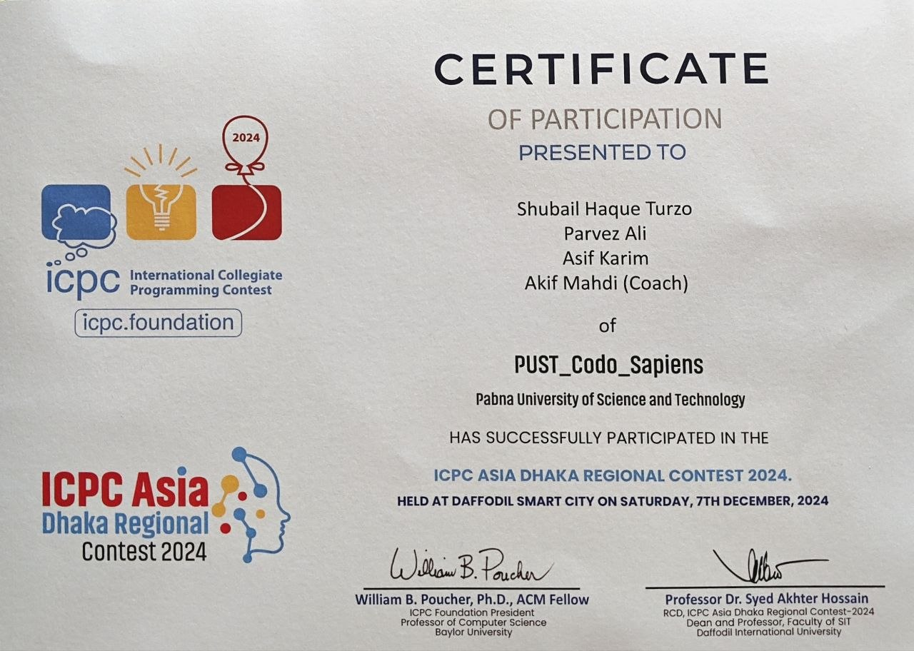
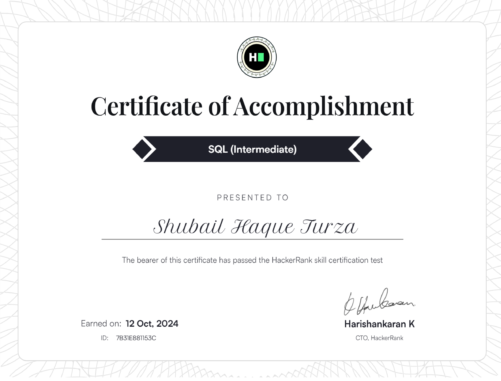
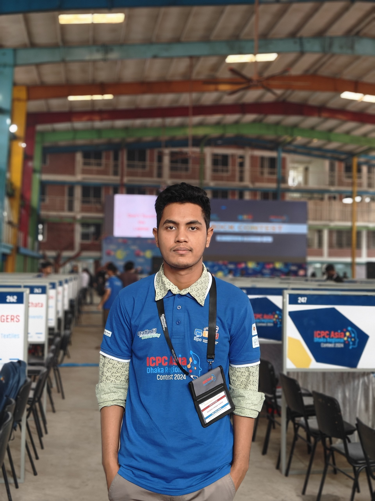
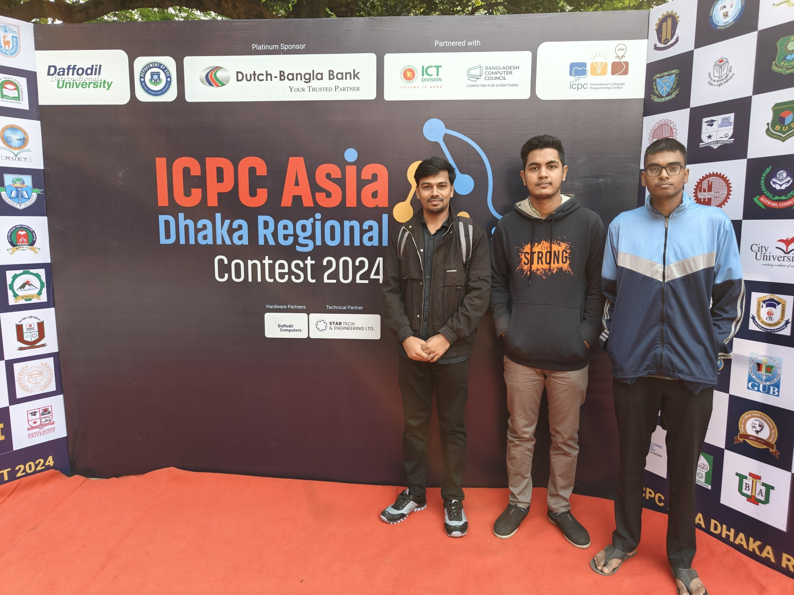

About Me
I recently graduated with a Bachelor of Science in Engineering (B.Sc. Engg.) in Information and Communication Engineering (ICE) from Pabna University of Science and Technology (PUST), Bangladesh (Academic Journey: 22 May 2022 – 21 September 2026, CGPA: 3.83 out of 4.00). My core research interests center on Deep Learning, Computer Vision, and Multimodal Learning, with practical applications across healthcare AI and automated vision systems.
Alongside research, I actively practice competitive programming. I represented PUST at the ICPC Asia Dhaka Regional Contest 2024 and achieved 2nd Runner-Up in the Solver Green Intra-University Programming Contest.
Education
Bachelor of Science in Engineering (B.Sc. Engg.) in Information & Communication Engineering
Higher Secondary Certificate (H.S.C.)
Secondary School Certificate (S.S.C.)
Research Experience
PUSTResearch Assistant
Served as a Research Assistant under the direct supervision of Dr. Md. Sarwar Hosain (Principal Investigator & Research Supervisor) on the research project:
"Development of a Real-Time Multimodal Deep Learning Framework Combining EEG, Facial, and Speech Features for Detection of Stress, Depression, and Anxiety in University Students"
Publications
3 PapersA Hybrid YOLO-EfficientNet Framework for Fine-Grained Vegetable Recognition in Dense Multi-Object Images
@inproceedings{turza2026yolo,
title={A Hybrid YOLO-EfficientNet Framework for Fine-Grained Vegetable Recognition in Dense Multi-Object Images},
author={Turza, Shubail Haque and others},
booktitle={2026 IEEE 2nd International Conference on Quantum Photonics, Artificial Intelligence \& Networking (QPAIN)},
year={2026},
organization={IEEE}
}
ResNeXt50-Guided Hybrid CNN–Transformer Framework for Early Stroke Abnormality Detection: A Comparative Deep Learning Study
@inproceedings{turza2026resnext50,
title={ResNeXt50-Guided Hybrid CNN-Transformer Framework for Early Stroke Abnormality Detection: A Comparative Deep Learning Study},
author={Turza, Shubail Haque and others},
booktitle={2026 International Conference on Power, Electronics, Communications, Computing, and Intelligent Infrastructure (PECCII)},
year={2026}
}
Fake News Detection in Bangla: A Transformer Ensemble Framework for Robust Classification
@inproceedings{turza2025fakenews,
title={Fake News Detection in Bangla: A Transformer Ensemble Framework for Robust Classification},
author={Turza, Shubail Haque and others},
booktitle={2025 28th International Conference on Computer and Information Technology (ICCIT)},
year={2025},
organization={IEEE}
}
Competitive Programming
ICPC & OnsiteICPC Asia Dhaka Regional Contest 2024
Intra-University Programming Contest (Solver Green)
Certificates & Contest Gallery
Click to enlarge









Technical Skills
Programming
Machine Learning & AI
Problem Solving & CP
Systems & Tools
Hardware & Simulation
Certifications
Academic References
2 RefereesDr. Md. Sarwar Hosain
SupervisorProfessor
Department of Information and Communication Engineering
Pabna University of Science and Technology, Pabna, Bangladesh
Dr. Md. Omar Faruk
Academic RefereeProfessor
Department of Information and Communication Engineering
Pabna University of Science and Technology, Pabna, Bangladesh